La vida
que me roza
Un viaje por aquello que nos toca y permanece: el encuentro, el deseo, la ausencia y la vida que insiste en mirarse de nuevo.
Leer el poemario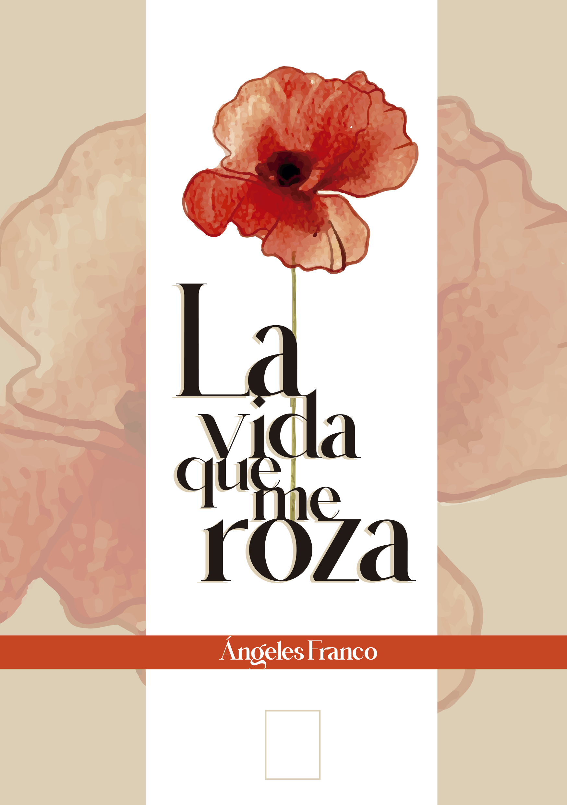
Aquello que nos toca
y permanece
La vida que me roza es un viaje por aquello que nos toca y permanece.
Ángeles Franco recorre en estas páginas los territorios del encuentro y del deseo, la intimidad de la piel y la palabra, pero también la ausencia, la fragilidad, la enfermedad y esos momentos en los que la vida obliga a mirarse de nuevo.
A medida que avanza el poemario, el amor deja de ser únicamente el vínculo entre dos personas para ensancharse hacia la amistad, la naturaleza, el mar, la gratitud y la propia existencia. El cuerpo que ama es también el cuerpo que cambia, que recuerda, que atraviesa pérdidas y aprende a regresar a sí mismo.
Con una voz cercana, sensual y luminosa, la autora convierte gestos cotidianos —unas manos, un café, una mirada, una orilla— en lugares donde cabe una vida entera.
Quizá vivir no consista en atravesar intactos el tiempo, sino en conservar la capacidad de sentir, de amar y de dejarnos rozar por aquello que nos transforma. Ángeles Franco
¿Por qué leerlo?
Cuatro motivos, entre muchos, para dejarte rozar por estos poemas.
Una voz que no esconde nada
Franco escribe desde muy cerca, sin rehuir la piel, el deseo ni la pérdida. Cada poema se lee como una confidencia entre dos personas.
Del amor a todo lo que amamos
El vínculo entre dos personas se abre paso hacia la amistad, la naturaleza y el mar, ensanchando lo que entendemos por amor.
Lecturas breves, para cualquier momento
Poemas pensados para leerse de uno en uno: entre una taza de café, un trayecto o una pausa del día.
Un espejo para lo que nos transforma
La fragilidad y la enfermedad aparecen sin dramatismo, como parte natural de aprender a mirarse de nuevo.
Muy pronto, en vídeo
Estamos preparando un pequeño tráiler del poemario. Mientras tanto, síguenos en redes para no perdértelo.
Léelo aquí, hasta el primer poema
Pasa las páginas como si tuvieras el libro en las manos: este adelanto llega hasta el primer poema.
Preparando el libro…
Lo que dicen del libro
Aquí aparecerán las reseñas de medios, blogs literarios o autores que quieran compartir su lectura de La vida que me roza.
De momento, este espacio espera sus primeras palabras — añade aquí citas reales cuando las tengas, con el permiso de quien las escribió.
Dónde comprarlo
Elige el formato que prefieras.
Estos botones son de ejemplo — sustitúyelos por los enlaces reales en cuanto los tengas.
Detrás del libro
Algunas imágenes que acompañan el proceso de este poemario.
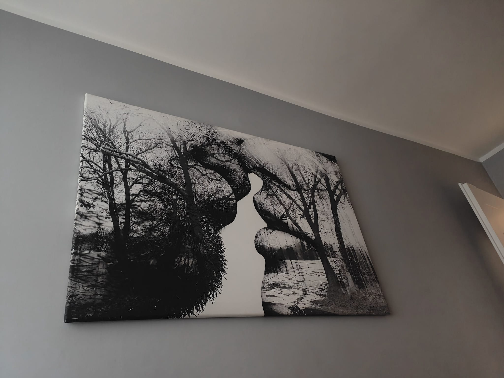
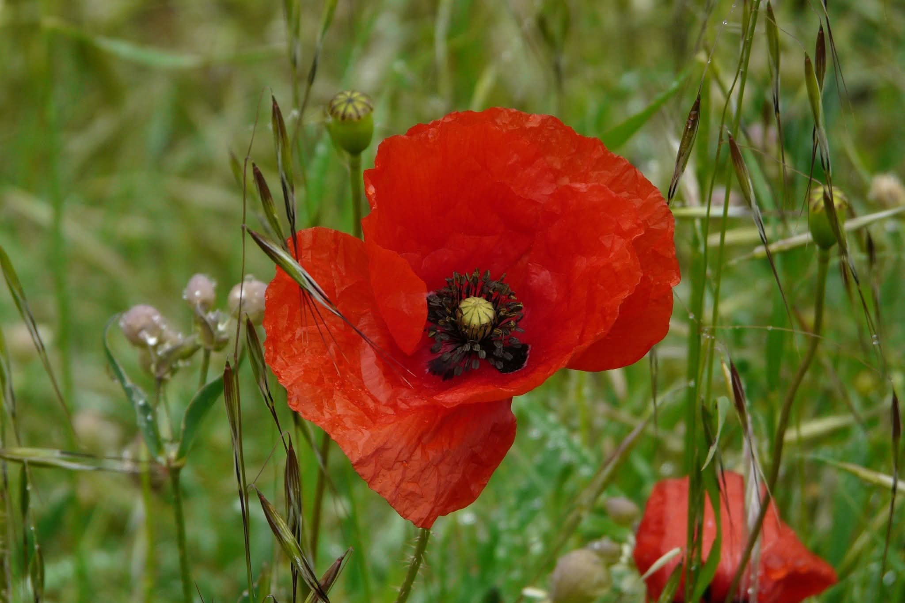
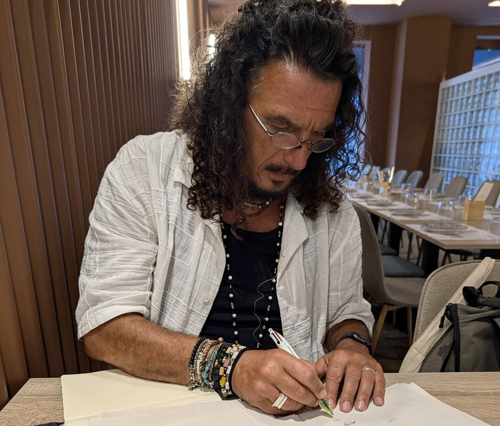
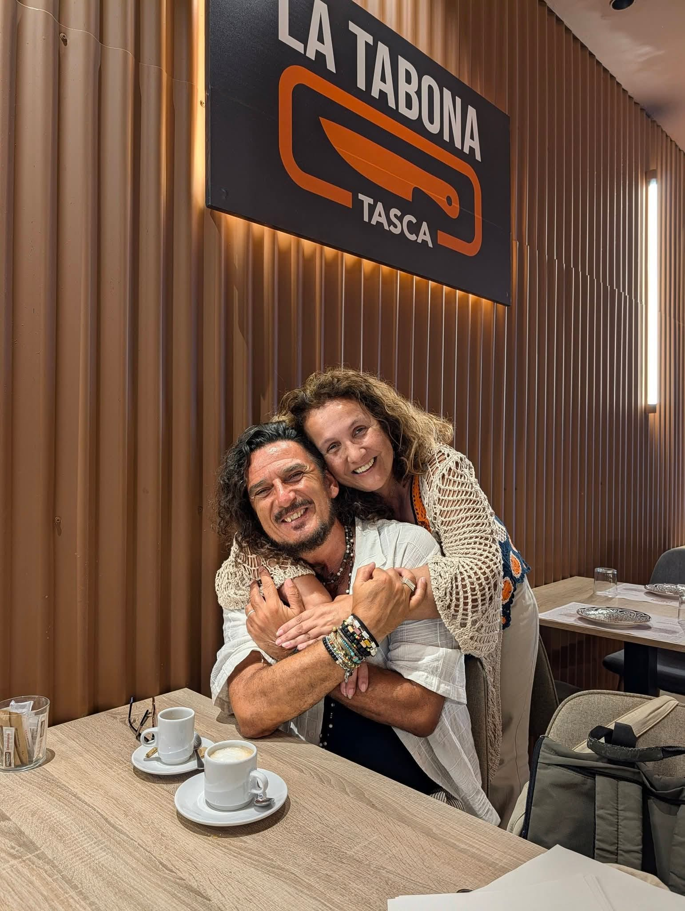
Marcapáginas personalizados
Hemos creado unos marcapáginas personalizados para el libro, uno por cada poema destacado. Deslízalos para ver el anverso y el reverso de los tres diseños.
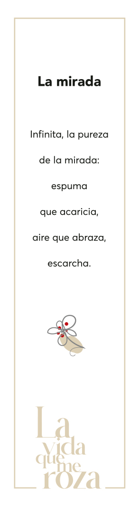
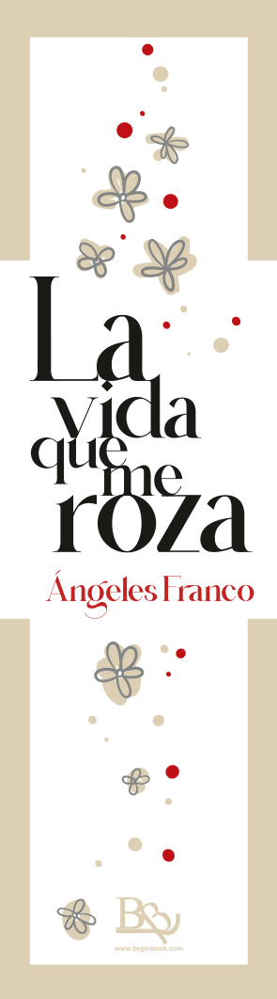
Anverso · Reverso
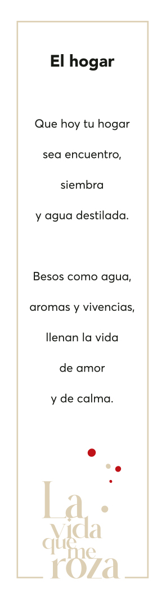
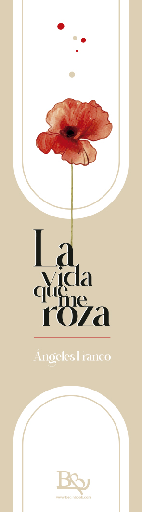
Anverso · Reverso
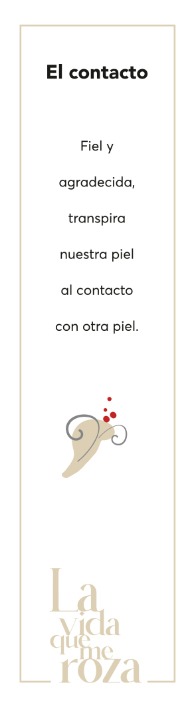
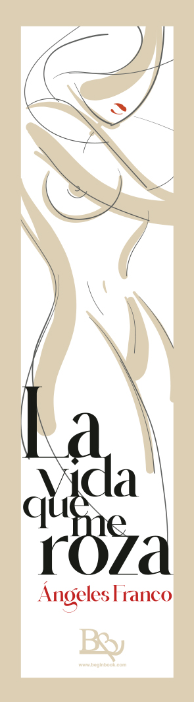
Anverso · Reverso
El PDF está listo para imprimir a tamaño real (5 × 18 cm) y recortar por las guías.
En redes sociales
Novedades, fragmentos e ilustraciones del poemario.
Añade aquí los enlaces a los perfiles reales de la autora o del libro.